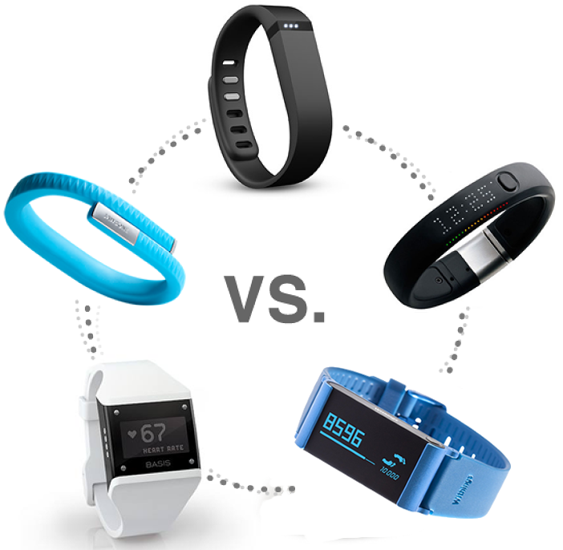

In this blog post we examine 5 popular wearable activity trackers. In order to understand a little more about what an "activity tracker" does, please view this video
In the US Fitbit dominate the market with a share of, but we look into the various features of each.
In this post, we compare 5 wearable trackers. This article aims to compare all five and highlight the limitations of the five.
Please click on your favourite fitness band for more information!
From the table below, we can see that the
| Fibit Flex | Wthings Pulse | Nike Fuelband | Basis B1 | Jawbione Up | |
|---|---|---|---|---|---|
| Released: | May 2013 | June 2013 | February 2012 | March 2013 | November 2012 |
| Water Resistant: | Yes | No | Yes | Yes | Yes |
From the table above, we can see that..
Without having personally tried each of the wearables, it is difficult to tell which is the "best". Furthermore different people have different requirements, and budgets. Certainly the Fitbit Flex proved very popularand it is easy to see why as it seems to provide excellent value for money. The Withings Pulse is